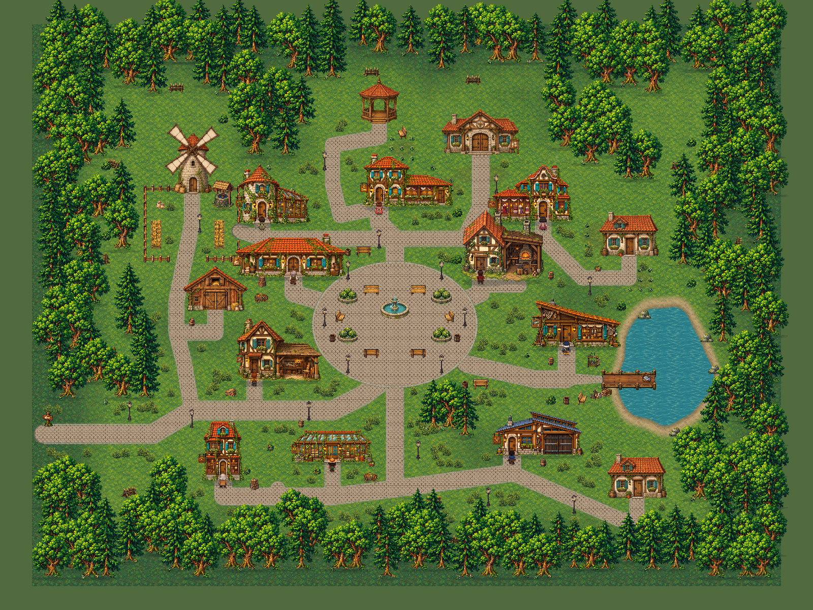
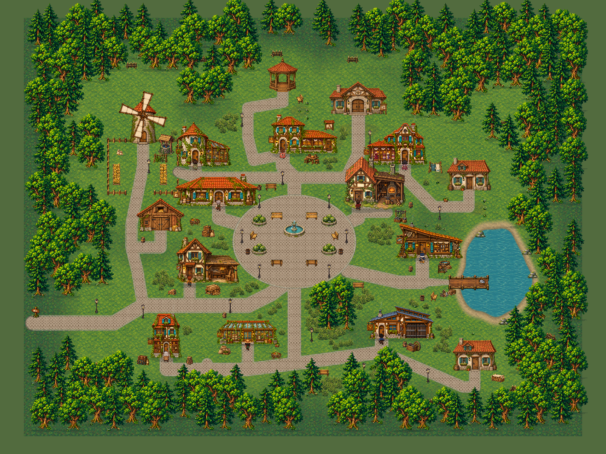

Vila: antes e depois
Arraste a divisão para comparar a preview.10 publicada com a reformulação local. As duas capturas usam o mesmo enquadramento.


Preview.10Reformulação local
Nova composição ainda sem publicação. O movimento do moinho, da fonte e os olhares dos moradores são visíveis no jogo.